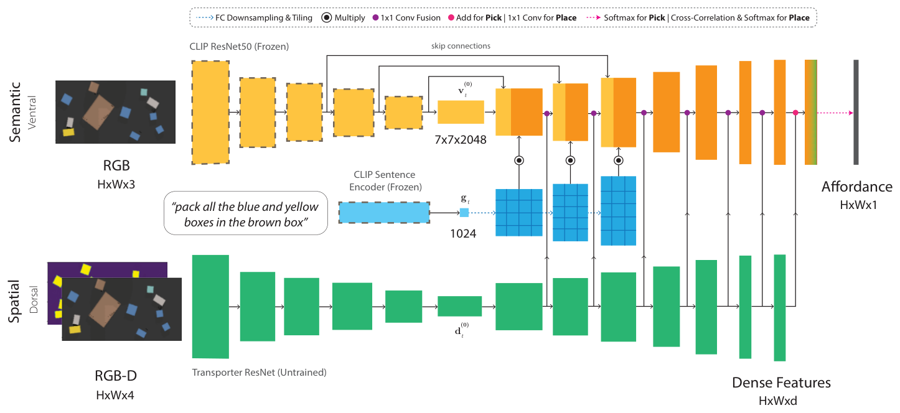
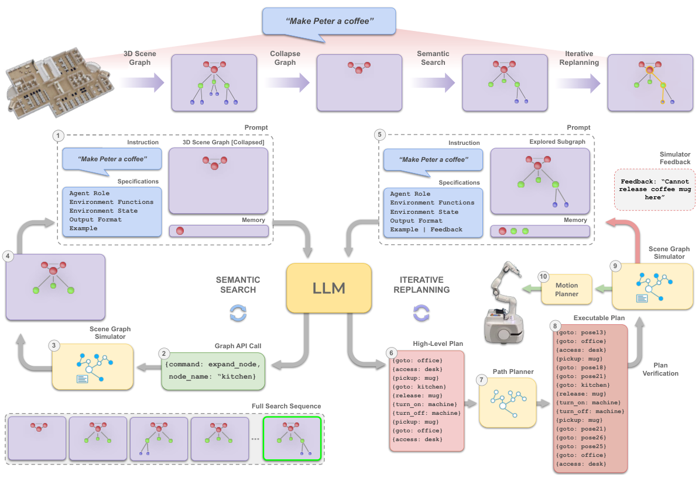
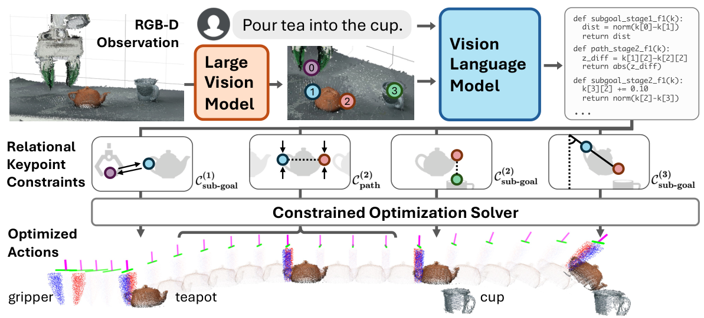
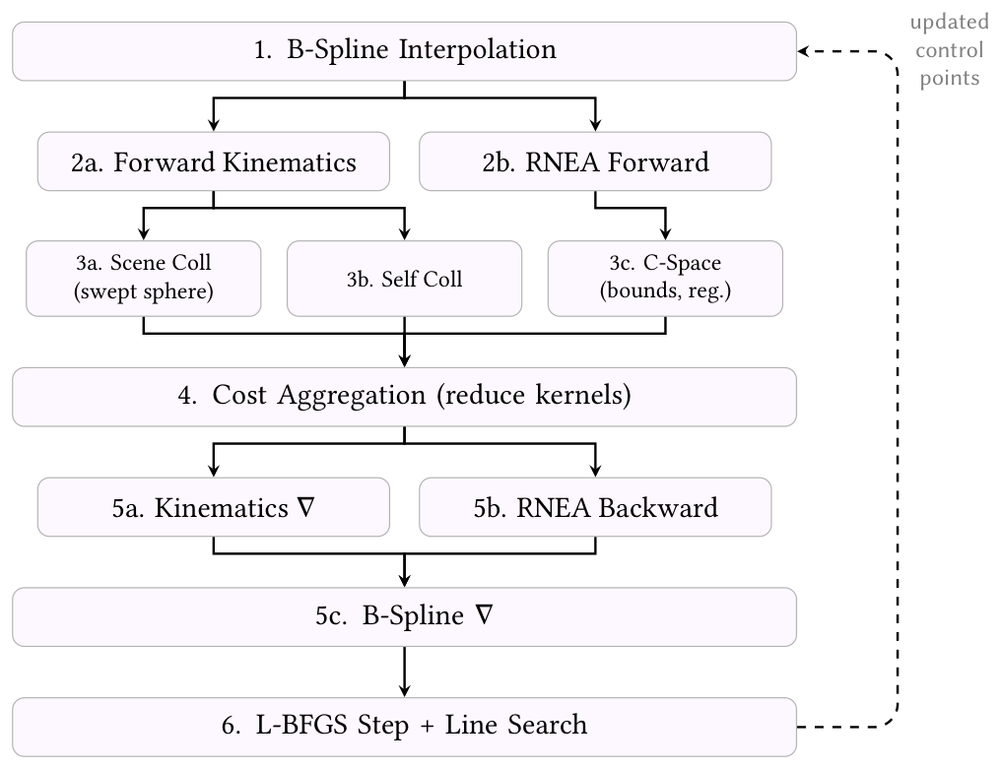
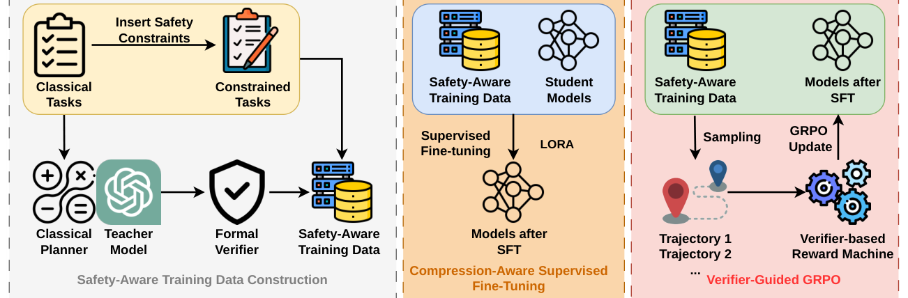
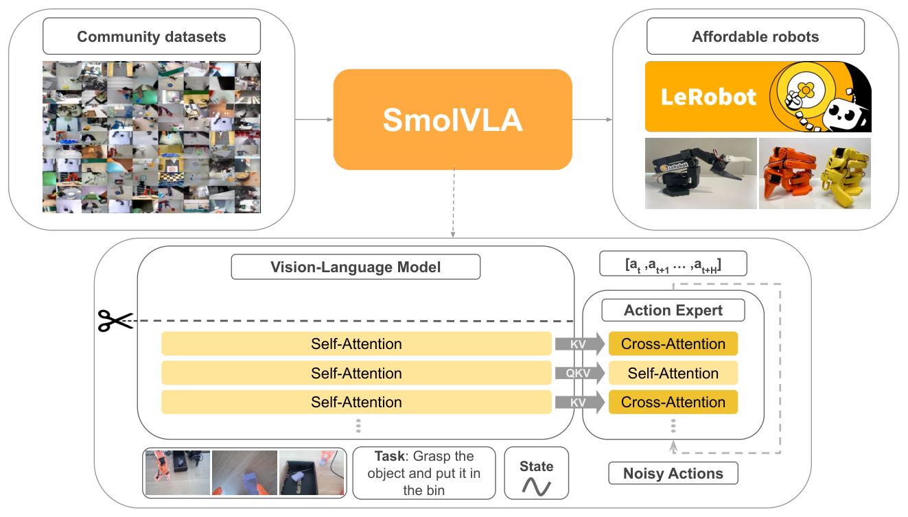
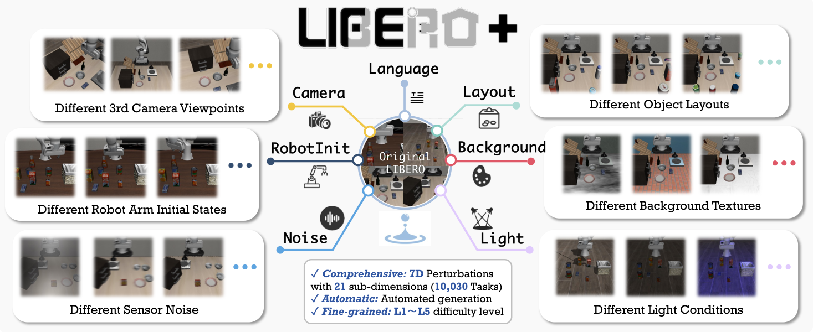

Text to Trajectory
Updated 11 November 2026
“Place the red carrier to the right of the blue carrier, passing over the marker.” A robot can reach the correct destination without a collision and still fail that instruction. The route matters as much as the endpoint.
An industrial controller needs object identities, coordinates, actions and limits. The sentence supplies some of those indirectly and leaves others unstated. Turning it into motion brings language grounding, program generation, planning and control into the same system. This review follows the interfaces between them, with Visual Components as a possible simulation backend.
A route is part of the request
The carrier example contains an object to move, a reference object, a spatial relation and a route requirement. “Right” also needs a coordinate frame. A gap needs units and a tolerance. “Do that again” needs a record of the last successful task and a decision about which parts should be recomputed after the scene changes.
A structured description makes these choices inspectable. Early Generalized Grounding Graphs connect language to candidate objects, places, paths and events, preserving more of the command than an object label alone. Their central problem remains current even when a neural model performs the translation. [1]
A task can be perfectly valid under its encoded rules while missing a requirement from the sentence. If “over the marker” disappears during translation, a downstream solver has no reason to include it. Checking meaning therefore needs access to the original request, rather than only to the generated program.
Grounding the scene
CLIP learns visual and textual features that make matching image–text pairs similar. This gives a perception system a useful way to search by description. Precise manipulation also needs spatial information about where an object is and how the robot can interact with it. [2]
CLIPort combines CLIP-based semantic features with a spatial pathway for pick-and-place prediction. The two streams help distinguish what to manipulate and where to act. The resulting affordance maps belong to a learned manipulation policy; a separate industrial planner may instead need an object identifier, a pose and explicit geometric constraints. [3]

Persistent scene representations help when a task extends beyond one camera image. SayPlan searches a hierarchical 3D scene graph for relevant objects and places, then combines language planning with classical path planning and simulator feedback. Collapsing irrelevant parts of the graph reduces the information the language model has to process. [4]

Work on Joint-Embedding Predictive Architectures (JEPAs) studies when separately trained modalities learn matching representations. Its alignment theorem assumes matched views of the same underlying states and additional idealisations. Object references and route requirements need a further task-level test, because a rotation between aligned feature spaces does not specify either one. [5]
Turning a request into callable work
SayCan chooses among available skills using both language relevance and an estimate of whether a skill can succeed. Code as Policies gives generated programs more freedom to process perception, calculate geometric quantities and call control APIs. The choice changes what must be checked. Selecting a known skill requires reliable preconditions; generated code also introduces arguments, control flow and assumptions that can be wrong. [6, 7]
NeSyRo checks generated policy code symbolically and gathers further observations when the available state is insufficient. That separates some code errors from missing knowledge about the scene. The checks remain limited by the properties represented in the symbolic model. [8]
Industrial integration makes the interface concrete. Syniawa and colleagues use AutomationML state descriptions and a defined skill library, translating instructions into process steps and C++ calls in simulated cabinet assembly with ROS 2 and MoveIt 2. A Visual Components implementation would need an equally explicit account of scene objects, callable skills and their inputs. The simulator name alone says little about that contract. [9]
Making the movement feasible
Task-and-motion planning connects discrete choices with continuous geometry. A requested placement may require a different grasp, a different action order or moving an obstruction first. A collision report is useful to the task planner only if it can revise one of those choices in response. [10]
VoxPoser translates language and visual detections into 3D preference and constraint maps that a motion planner can optimize. ReKep uses relationships between visual keypoints, expressed as functions over task stages and transitions. Both give the requested behavior a spatial representation that reaches beyond a named final pose. [11, 12]

For the red carrier, a final right-of relation constrains placement. Passing over the marker constrains the carried object during transport. Checking only the gripper endpoint would leave the route untested. Even a correct route description can be infeasible with the current grasp, obstacle layout or joint limits.
A collision-free geometric path also has to be timed and tracked. cuRobo uses GPU-parallel inverse kinematics and trajectory optimization to search efficiently. cuRoboV2 adds dynamics-aware B-spline optimization with torque limits and depth-derived obstacle distance fields. These methods improve the motion computation once the goal and constraints have been supplied. [13, 14]

The remaining assumptions matter at execution. Payload, collision geometry, contact behavior, attachment state and controller tracking determine which motions the model represents accurately. A simulator can check its own model precisely while omitting a physical effect that matters on the real cell.
Smaller models with stronger checks
A restricted industrial vocabulary can make compact task models practical. Ro-SLM distils instruction and operation-code knowledge into smaller models. Its 8B configuration reports 97.7% success on simple UAV tasks and 70% on complex ones. The difference between those settings is more informative than a single claim that a small model works. [15]
SLoSa constructs safety-aware examples with classical planners, a teacher model and formal verifiers, then combines supervised adaptation with verification-guided reinforcement learning. It evaluates formal domains, household simulators, edge hardware and a desktop arm. Those settings test different parts of the system, so their results should remain identifiable when discussing deployment. [16]

Checks can also guide generation directly. VOLTS gives a compact model tokens representing complete grounded actions and validates candidates during branching search. It returns valid plans for about 76% of 2,000 problems across four classical planning domains. The validator judges actions against the formal state and domain; it cannot supply a language requirement that was never encoded. [17]
SELP translates user constraints into temporal logic and restricts planning with the selected specification. Planner-in-the-loop formalization instead diagnoses and repairs specifications written in the Planning Domain Definition Language (PDDL). It separates parseability, solvability and agreement with reference planning outcomes, exposing errors that a syntax check would miss. [18, 19]
These mechanisms address different errors. Training can improve the first proposal, constrained decoding can reject an inapplicable action, and planner feedback can reveal a defective specification. Their costs also differ. A smaller model making several repair calls may have worse response latency than a larger model making one successful call.
When the policy learns the movement
Vision-language-action models assign more of perception and control to a learned policy. RT-2 represents robot actions as tokens and combines robot demonstrations with visual-language training. Diffusion Policy generates continuous action sequences through denoising and updates them over a receding horizon. Each approach needs an action representation and experience appropriate to the robot. [20, 21]
SmolVLA combines a compact visual-language backbone with an action expert and community-collected robot data. It predicts chunks of upcoming actions and separates that prediction from execution. This is a different resource problem from interpreting a sentence into a short task record, because images and actions must also be processed at the required control rate. [22]

Adaptation choices can be as consequential as the model name. OpenVLA-OFT combines parallel decoding, action chunking, continuous actions and a regression objective. In its LIBERO evaluation, average success rises from 76.5% to 97.1% and action-generation throughput increases by 26 times. That comparison changes the training and execution recipe, so the improvement cannot be attributed to backbone size alone. [23]
A learned policy and an explicit planner can also share a system. A task interpreter might select a learned grasping skill while a separate motion or collision check evaluates its proposed movement. Choosing that division requires compatible observations, action conventions and timing, rather than a parameter-count comparison between models doing different jobs.
Testing outside the familiar scene
The training signal determines what a system can learn. An instruction paired with a formal task trains interpretation. Camera observations paired with timed actions train behavior. MimicGen adapts object-relative demonstration segments to new configurations, generating more than 50,000 demonstrations from roughly 200 human demonstrations in its study. That expands behavioral supervision without automatically labeling every route or exclusion a person might request. [24]
Simulation frameworks such as Isaac Lab provide controlled observations, actuator models and parallel rollouts. For an initial interpretation test, exact simulator object state can remove perception errors. Replacing it later with camera-derived state introduces another source of uncertainty that should be evaluated separately. [25]
LIBERO separates variations in spatial arrangements, objects, goals and longer task sequences. LIBERO-Plus adds controlled perturbations of language, layout, camera view, robot initialization, lighting, backgrounds and sensor noise. These tests make a nominal success score much easier to interpret. A policy may handle the original task while relying on a familiar viewpoint or phrasing. [26, 27]

LIBERO-Safety distinguishes physical execution risks from semantic safety assessment. Completion, collision and refusal rates need to be read together. A system that executes fewer requests may collide less without improving the movements it does attempt. RoboDojo extends evaluation across simulation and real robots, where common interfaces help expose differences in generalization, memory, precision and long-horizon execution. [28, 29]
A focused study in Visual Components
A useful first study can stay with one arm and a small pick-and-place vocabulary. The interpreter identifies an object, a reference, a relation and an optional route. Deterministic code computes coordinates and calls a limited skill library. Separate observations check the carried-object trace and final placement after release.
Three conditions would share the same interpreter and motion backend. A single-proposal baseline gets one attempt. A bounded-repair condition can use format and feasibility diagnostics. A requirement-checking condition also compares the proposal with requirements extracted from the original sentence before the checker sees the proposal. Separate prompting can still produce correlated mistakes, so an extra-compute control should receive the same call, token and time budget without that checker.
The test cases can stay small enough to diagnose. Swap left and right, exchange object names, add a marker passage, or request an explicit gap. Then move the reference object and repeat the last successful task. A paraphrase should preserve the intended action; changing a requirement should change it. Reordering scene records or consistently renaming identifiers should also preserve the result after identities are mapped back.
Task requirements must be defined independently of the model output, with valid alternative placements and routes accepted. Ambiguous or unsupported requests should trigger clarification. A failed step ends a dependent episode, leaving its remaining steps unsuccessful. Otherwise the score can improve merely by excluding the difficult parts of a workflow.
Model adaptation deserves its own comparison. Start with the original model and the same model adapted on reviewed examples, holding the checker and motion backend fixed. Split task families before generating related scene variants or paraphrases. Error–correction examples can be tested under a matched training budget, with artificial mistakes kept distinct from failures actually made by the model.
The main outcome is whole-request success, accompanied by requirement completeness and the fraction of reported completions that omit something requested. Record object, relation, route and context errors separately. Pair completion and refusal counts with collisions, placement error and route accuracy. Median and 95th-percentile response times should include failed requests; model inference, repairs and simulated motion should remain distinguishable. Peak memory and hardware settings complete the deployment picture.
Natural language should let an operator change the task without rewriting the controller. A new waypoint must change the route, a moved reference must change the placement, and a correction must preserve every requirement that still applies. Grounding, planning and learned control provide the components; the next step is to connect them through explicit, testable interfaces that carry intent all the way into executed motion.
My T2T repository puts these questions into a runnable MuJoCo KUKA iiwa cell, with Visual Components as the intended industrial target. It compares planning and requirement-checking methods on routes, placements and follow-up instructions, scoring the executed outcome. The code, frozen tasks and evaluation commands are available there for trying the approach and inspecting where it fails.
References
- Stefanie Tellex et al. (2011). Understanding Natural Language Commands for Robotic Navigation and Mobile Manipulation. Proceedings of the AAAI Conference on Artificial Intelligence, 25(1), 1507–1514.
- Alec Radford et al. (2021). Learning Transferable Visual Models From Natural Language Supervision. International Conference on Machine Learning (ICML), PMLR 139, 8748–8763.
- Mohit Shridhar et al. (2021). CLIPort: What and Where Pathways for Robotic Manipulation. Conference on Robot Learning (CoRL 2021).
show all 29 referencesshow fewer references
- Krishan Rana et al. (2023). SayPlan: Grounding Large Language Models using 3D Scene Graphs for Scalable Robot Task Planning. Conference on Robot Learning (CoRL 2023).
- Randall Balestriero and Yann LeCun (2026). Proving and Improving the Platonic Representation Hypothesis with JEPAs. arXiv preprint, arXiv:2610.39302v1, 29 October 2026.
- Michael Ahn et al. (2022). Do As I Can, Not As I Say: Grounding Language in Robotic Affordances. arXiv preprint.
- Jacky Liang et al. (2023). Code as Policies: Language Model Programs for Embodied Control. IEEE International Conference on Robotics and Automation (ICRA).
- Sanghyun Ahn et al. (2025). Towards Reliable Code-as-Policies: A Neuro-Symbolic Framework for Embodied Task Planning. arXiv preprint.
- Daniel Syniawa et al. (2026). Semi-Automated Programming of Industrial Robotic Systems Using Large Language Models and Standardized Data Model. Robotics, 15(4), Article 79.
- Caelan Reed Garrett et al. (2021). Integrated Task and Motion Planning. Annual Review of Control, Robotics, and Autonomous Systems, 4, 379–408.
- Wenlong Huang et al. (2023). VoxPoser: Composable 3D Value Maps for Robotic Manipulation with Language Models. Conference on Robot Learning (CoRL 2023).
- Wenlong Huang et al. (2024). ReKep: Spatio-Temporal Reasoning of Relational Keypoint Constraints for Robotic Manipulation. Conference on Robot Learning (CoRL 2024).
- Balakumar Sundaralingam et al. (2023). cuRobo: Parallelized Collision-Free Minimum-Jerk Robot Motion Generation. arXiv technical report; expanded version of the ICRA 2023 paper.
- Balakumar Sundaralingam et al. (2026). cuRoboV2: Dynamics-Aware Motion Generation with Depth-Fused Distance Fields for High-DoF Robots. arXiv preprint.
- Wenhao Wang et al. (2026). Ro-SLM: Onboard Small Language Models for Robot Task Planning and Operation Code Generation. Findings of the Association for Computational Linguistics: ACL 2026, 34436–34460.
- Weizhe Xu et al. (2026). SLoSa: Small, Low-Power, and Safe Foundation Models for Robotic Task Planning. arXiv preprint.
- Nicholas Massad et al. (2026). VOLTS: Validated Output through Logit Tree Search for Reliable PDDL Planning with Small Language Models. Proceedings of the 39th Canadian Conference on Artificial Intelligence, PMLR 318, 872–879.
- Yi Wu et al. (2025). SELP: Generating Safe and Efficient Task Plans for Robot Agents with Large Language Models. IEEE International Conference on Robotics and Automation (ICRA).
- Jiamei Jiang et al. (2026). Toward Secure and Reliable PDDL Formalization of Large Language Models with Planner-in-the-Loop Feedback. arXiv preprint.
- Anthony Brohan et al. (2023b). RT-2: Vision-Language-Action Models Transfer Web Knowledge to Robotic Control. Conference on Robot Learning (CoRL 2023).
- Cheng Chi et al. (2025). Diffusion Policy: Visuomotor Policy Learning via Action Diffusion. The International Journal of Robotics Research, 44(10–11), 1684–1704. Online publication 2024; original RSS paper 2023.
- Mustafa Shukor et al. (2025). SmolVLA: A Vision-Language-Action Model for Affordable and Efficient Robotics. arXiv preprint.
- Moo Jin Kim et al. (2025). Fine-Tuning Vision-Language-Action Models: Optimizing Speed and Success. arXiv preprint.
- Ajay Mandlekar et al. (2023). MimicGen: A Data Generation System for Scalable Robot Learning using Human Demonstrations. Conference on Robot Learning (CoRL 2023), PMLR 229, 1820–1864.
- NVIDIA (2025). Isaac Lab: A GPU-Accelerated Simulation Framework for Multi-Modal Robot Learning. arXiv preprint.
- Bo Liu et al. (2023). LIBERO: Benchmarking Knowledge Transfer for Lifelong Robot Learning. Advances in Neural Information Processing Systems (NeurIPS), 36.
- Senyu Fei et al. (2026). LIBERO-Plus: A Progressive Robustness Benchmark for Visual-Language-Action Models. IEEE/CVF Conference on Computer Vision and Pattern Recognition (CVPR), 38574–38583.
- Rongxu Cui et al. (2026). LIBERO-Safety: A Comprehensive Benchmark for Physical and Semantic Safety in Vision-Language-Action Models. arXiv preprint.
- Tianxing Chen et al. (2026). RoboDojo: A Unified Sim-and-Real Benchmark for Comprehensive Evaluation of Generalist Robot Manipulation Policies. arXiv preprint.
Use your identity on another device
Save an encrypted identity file and restore it in another browser. Keep the file and its passphrase private.